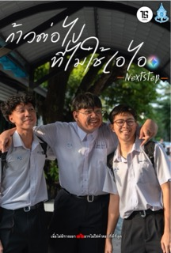
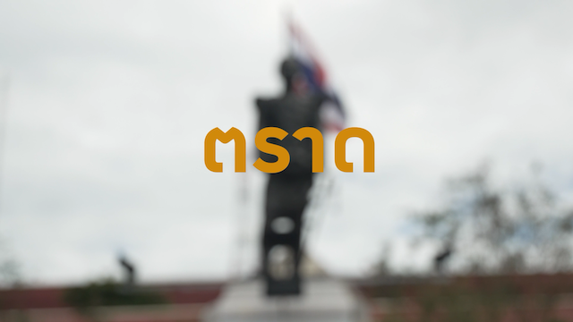

About Me
สวัสดีครับ^^! ผมวีรภัทร อุบลกาญจน์(วี) มีความสนใจและชื่นชอบในด้านTech รวมถึงด้านGraphic Designและ Media ปัจจุบันกำลังศึกษาที่ โรงเรียนภูเก็ตวิทยาลัย แผนการเรียนวิทย์-คณิต ระดับชั้นมัธยมศึกษาปีที่ 6 ครับ >_<

I do tech and designs stuff.
Tap for more
Tap for more
Tap for more
สวัสดีครับ^^! ผมวีรภัทร อุบลกาญจน์(วี) มีความสนใจและชื่นชอบในด้านTech รวมถึงด้านGraphic Designและ Media ปัจจุบันกำลังศึกษาที่ โรงเรียนภูเก็ตวิทยาลัย แผนการเรียนวิทย์-คณิต ระดับชั้นมัธยมศึกษาปีที่ 6 ครับ >_<
HTML
CSS
Python
Blender
Figma
Affinity
DaVinci Resolve
Premeire Pro
Lightroom
TrueNAS Scale
Linux
macOS
Minecraft Datapacks

The Next Step คือ ภาพยนตร์สั้นที่จัดทำขึ้นในหัวข้อ”AIและวัยเรียน” โดยเล่าในมุมมองทัศนคติเชิงลบ เพื่อสะท้อนข้อเสียของการที่ได้รับผลกระทบจากการใช้เทคโนโลยีAIในทางที่ไม่ดี โดยได้ระดับ🥉เหรียญทองแดงในลำดับที่13 ในวันที่ 29 มกราคม 2569 ศิลปะหัตถกรรมครั้งที่ 73 ณ โรงเรียนดีบุกพังงาวิทยายน

46ict คือการแข่งขันระดับประเทศ ซึ่งผมได้ทำการแข่งขันตัดต่อวิดีโอภายใต้หัวข้อ”เที่ยวตราดสไตล์Gen Z” และได้รับ🥈เหรียญเงินลำดับที่ 9 จากทั้งหมด 37 ทีม ณ โรงเรียนตราดตะการคุณ จังหวัดตราด ในวันที่ 6 ตุลาคม 2568

“ผลักเพื่อนเพื่อ”เป็นภาพยนตร์เรื่องแรกของThemself Production ที่ถูกจัดทำขึ้นภายใต้โครงการOFOS Cinebridge 5 ภาคใต้ ซึ่งเป็นการอบรมการผลิตสื่อภาพยนตร์โดยมีมหาวิทยาลัยชั้นนำเป็นผู้สนับสนุนโครงการนี้